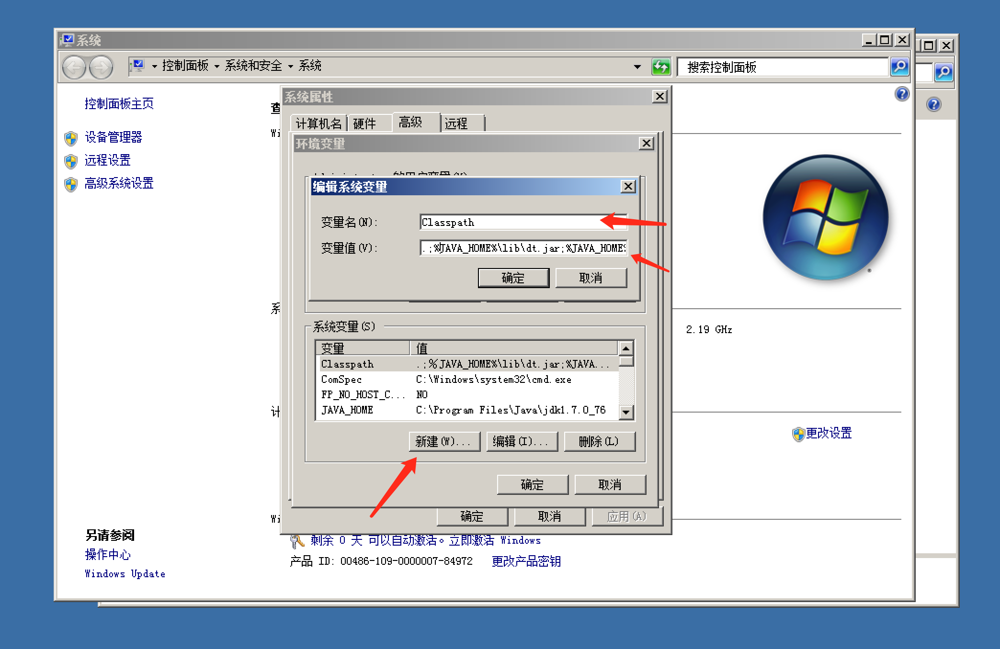
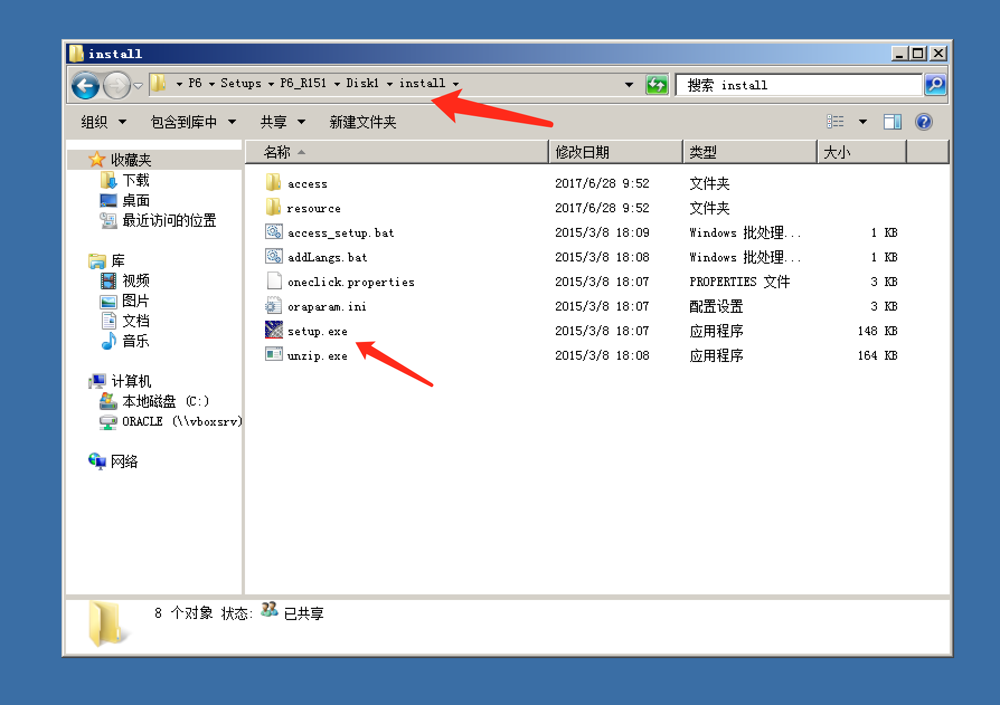

<html>
  <title>Primaver P6 R15.1 安装手册</title>
  <style>
    a, p{
      color: #333;
    }
    p{ line-height: 1.1em; padding: 0.2em; margin: 0.2em;}
    a, a:visited, a:hover{
      color: #333;
      text-decoration: none;
    }
    li{
      margin: .5em;
    }
    img{
      display: inline-block; width: 50%; margin: 1em auto;
      margin-left: 2em;
    }
  </style>
  <body>
    <h2>Primaver P6 R15.1 安装手册</h2>
    <hr/>
    <h3>目录</h3>
    <ul>
      <li><a href="#system-require">系统要求<a></li>
      <li><a href="#files">获取安装文件<a></li>
      <li><a href="#setup">安装<a>
        <ul>
          <li><a href="#jdk">JDK1.7<a></li>
          <li><a href="#weblogic">Weblogic 10.3.6<a></li>
          <li><a href="#eppm">EPPM15.1<a>
            <ul>
              <li><a href="#webservice">配置WebService<a></li>
            </ul>
          </li>
        </ul>
      </li>
      <li><a href="#server-admin">服务管理<a></li>
      <li><a href="#client-run">客户端运行<a></li>
    </ul>

    <h3>详细步骤</h3>
    <ol>
      <li id="system-require">
        <h4>系统要求</h4>
        <p>Windows Server 2008R2 Enterprise x64</p>
        <p>CPU Intel Xeon E5-2690 2.9GHz (2 处理器) RAM 8 GB</p>
      </li>
      <li id="files">
        <h4>获取安装文件</h4>
        <p>JDK 1.7.*</p>
        <p>Weblogic 10.3.6</p>
        <p>EPPM15.1</p>
        
      </li>

      <li id="setup">
        <h4>安装</h4>
        <ul>
          <li id="jdk">
            <h4>JDK 1.7.*</h4>
            <p>默认下一步即可</p>
            
            
            
            <p>设置环境变量</p>
            
            
            
            <p>创建系统变量： JAVA_HOME : 安装的JDK的目录</p>
            
            <p>创建系统变量： Classpath </p>
            
            <p>修改系统变量： Path, 添加：%JAVA_HOME%\bin </p>
            
            <p>打开控制台验证安装结果， java -version </p>
            
            
            <p>JDK1.7 安装完成</p>
          </li>

          <li id="weblogic">
            <h4>Weblogic 10.3.6</h4>
            <p>通过命令，运行安装程序: java -jar wls1036_generic.jar</p>
            
            <p>创建新的中间件</p>
            
            <p>取消接受更新提示</p>
            
            <p>下一步</p>
            
            <p>选择安装好的jdk</p>
            
            <p>等待完成</p>
            
            <p>安装完成，不运行  QuickStart</p>
            <h4>安装补丁</h4>
            <p>10.3.6 的版本需要安装官方补丁，否则会导致Team Member 无法使用，本手册使用手动修改的方式安装补丁</p>
            
            
          </li>

          <li id="eppm">
            <h4>EPPM15.1</h4>
            <p>运行安装引导程序</p>
            
            <p>默认下一步</p>
            
            <p>选择需要安装的应用： P6 和 Team Member(选装Webservice)</p>
            
            <p>确认安装</p>
            
            <p>创建新的数据库链接</p>
            
            <p>创建新的Weblogic域</p>
            
            <p>P6配置引导程序</p>
            
            <p>创建新的P6数据库</p>
            
            <p>输入数据库链接信息</p>
            <p>Host Address: 127.0.01</p>
            <p>DBA Password: oracle</p>
            <p>Database Name: sws</p>
            
            <p>输入P6的系统用户信息，建议密码和用户名一致</p>
            
            <p>输入创建的域的密码：weblogic1</p>
            
            <p>完成配置，点击下一步安装</p>
            
            <p>等待安装，打开需要10分钟左右</p>
            
            <p>安装完成</p>
            
            <p>保存一下配置信息</p>
            
            <p>记录了P6和TM的链接地址</p>
            
            <ul>
              <li id="webservice">
                <h4>配置webservice</h4>
                <p>运行 adminpv.cmd</p>
                
                <p>输入用户名密码 privuser/privuser</p>
                
                <p>展开 P6 的 Webservice 节点</p>
                
                <p>将部分属性值设置为 false，保存即可</p>
                
                
              </li>
            </ul>
          </li>
        </ul>
      </li>

      <li id="server-admin">
        <h4>运行和重启P6服务</h4>
        <p>在系统开始菜单>P6 EPPM>Start Primavera.bat 和 Stop Primavera.bat</p>
        
      </li>

      <li id="client-run">
        <h4>客户端运行</h4>
        <p>P6: http://[server-ip]:8203/p6</p>
        
        

        <p>Team Member: http://[server-ip]:8207/p6tmweb</p>
        
        
      </li>

    </ol>

  </body>
<html>